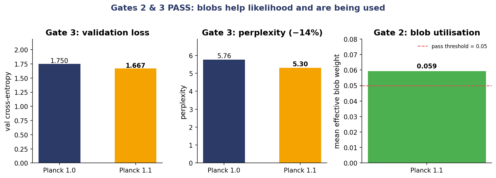

Planck 1.1: preliminary results
Continuing the SGS series.
Numbers from the first full run.
Gate 3, perplexity. Val loss 1.7504 to 1.6672. Perplexity 5.76 to 5.30. A 14 percent relative reduction. Pass.
Gate 2, utilisation. Mean effective blob weight 0.059, above the 0.05 floor. The gate is using the blob pathway at inference. Pass.
Gate 1, base intactness. With blobs silenced, Planck 1.1 val loss was 1.6669, not 1.7504. The base got better by the same magnitude as the blobs did. The fine-tune unfroze the base, so "blobs off" is not Planck 1.0 plus-minus noise, it is Planck 1.0 after more training. This gate as specified cannot separate the two. A frozen-base retrain is queued for Planck 1.3.
Gate 4, repetition. First version counted repeated 4-grams across 50 samples per model: 258 for Planck 1.0, 417 for Planck 1.1. That aggregate number collapses two different behaviours. Looping inside a single sample is a failure mode. Agreement across different samples of the same prompt is the main upside of the blob architecture for factual and code output. The aggregate cannot tell them apart.
We split Gate 4 in two. Gate 4a counts within-sample 4-gram repeats and averages per sample. This is the new hard gate. Gate 4b reports unique-n-gram ratio and pairwise Jaccard across samples of the same prompt, informational only. Rerun in flight.
